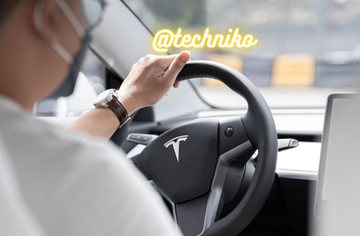

What’s Inside Elon Musk Twitter Deal & Future Plans

Elon Musk, the owner of Tesla, has signed a deal to buy Twitter for $54.20 per share, giving the valuation of $44 billion on Monday. A few days ago he first became the company’s biggest shareholder. Then attempted to purchase it all together and finally, after a week-long process, Elon Musk buys Twitter. The world’s richest man acquired Twitter because he believes it is lacking from being a “free speech” platform. After the Elon Musk Twitter deal is completed, it will become a privately owned firm. Musk called Twitter “the digital town square where things crucial to the future of humanity are discussed” in a statement posted after the agreement was completed. He is looking forward to tapping into the company’s “tremendous potential.” In this post, we will discuss why Elon Musk bought Twitter and his future plans for it.
Elon Musk Twitter Deal: Everything You Need To Know
In a post, Twitter CEO Parag Agrawal remarked, “Twitter has a purpose and significance that influences the whole globe. We are very proud of our workers and motivated by the job that has never been more critical.”
After Musk became the biggest shareholder, Twitter’s board implemented an anti-takeover strategy to prevent him from increasing his 9% share in the firm to 15%. It made the company takeover prohibitively costly. Twitter’s board was concerned that if it didn’t work out a deal with Musk, many shareholders would support him in a tender bid. While the poison pill would have prohibited Twitter shareholders from tendering their shares, Twitter thought it was perceived to be acting against the wishes of many of its shareholders. So, it would have significantly undermined its bargaining position.
The Twitter board started the bargain with Elon Musk labeling that as “operational continuity” until the acquisition was finalized. They suggested a $54.20 per share price. But when Musk offered $46.5 billion with supporting financial commitments, no other bids surfaced. “I believe we are quite confident that (the deal) will enable this team to continue to make the firm successful in between signing and finalizing the transaction,” Bret Taylor, the chairperson of Twitter’s board of directors, said.
After its initial public offering in 2013, Twitter’s service as a public business came to an end with this agreement.
What Are The Future Plans Of Twitter?
Elon Musk has characterized Twitter as a social media platform that is required to protect “free expression.” He has previously criticized Twitter, claiming that the network lacks the right to free expression and takes part in “censorship.” But he has not said what he wants to alter.
Before Elon Musk bought Twitter, he has hinted in recent weeks that he might relax Twitter’s content moderation measures. Also, scale down attempts to make the platform free of people who break the service’s rules. Musk has also said that he does not want anybody to quit Twitter because of his ownership. He wrote Monday, “I hope even my worst critics stay on Twitter. Because that is what freedom of expression entails.”
However, content monitoring isn’t Musk’s sole passion. Here’s what else he’d want to see changed on Twitter.
What New We May See After the Elon Musk Twitter Deal
Elon Musk requested to get an edit button on the tweets, which Twitter claims is in the works.
He wants Twitter Blue subscribers to be able to pay using his preferred cryptocurrency, dogecoin.
He believes that Twitter’s algorithm, which selects which tweets are visible to which users, should be made open source. So, it will “boost confidence” in the network.
He claims that Twitter should get rid of the spambots that plague its site. Also, it should “authenticate all actual people” with some type of verification badge.
Twitter should also use end-to-end encryption for its messaging system so no one can access them or hack them.
According to Musk, Twitter should be politically neutral.
Lastly, he wants everybody to have maximized fun on Twitter!